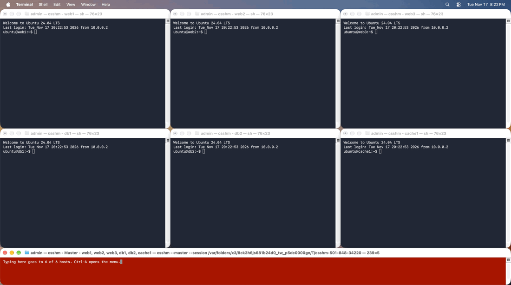

csshm
Cluster SSH for macOS: type once and it goes to many SSH sessions at the same time.
csshm opens one Terminal window per server, tiles them across your monitors and adds a red master window. Whatever you type in the master goes to every server. It is a single binary written in Swift, inspired by csshX and ClusterSSH.

Install
curl -fsSL https://raw.githubusercontent.com/anarchy89/csshm/main/setup.sh | sh
Or with Homebrew:
brew tap anarchy89/tap brew trust anarchy89/tap brew install csshm
It needs macOS 13 or later and works with Terminal.app. On Homebrew older than 7 leave out the brew trust line.
Use
csshm web1 web2 web3
- Type in the red master window and every server receives it.
- Click a server's window and type to reach only that one.
- Press Ctrl-A in the red window for the menu. Ctrl-A then
xcloses everything. - If some servers could not be reached, press Ctrl-A then
ato try just those again. The others stay connected.
csshm --login ubuntu web1 web2 web3 # same user on every server csshm --ssh_args "-i ~/.ssh/key" web1 web2 # same key on every server csshm --addresses servers.txt # servers from a file, one per line csshm --screen 1-3 --addresses servers.txt # spread across monitors 1 to 3
Hosts can also come from another command, such as every EC2 instance that is running:
aws ec2 describe-instances --filters "Name=instance-state-name,Values=running" \
--query "Reservations[].Instances[].PrivateIpAddress" --output text \
| tr '\t' '\n' | csshm --login ec2-user
What it does
- Sends what you type to every server at once or to one server when you click its window.
- Tiles dozens of windows across one or several monitors, portrait ones included and tiles them again when you ask.
- Keeps to part of a monitor if you want the rest free (
--bounds) and shows which number each monitor has (--list_screens). - Keeps a failed connection open so you can read the error and tries those servers again with one key while the others stay connected.
- Takes hosts from the command line, from files, from named clusters or from another command's output.
- Takes the same command line as csshX, so old habits and scripts carry over.
- Is not limited to ssh: a command template runs
docker exec,kubectl execor anything else in each window. - Passes chosen environment variables such as
AWS_PROFILEto every window, for AWS SSM and similar setups. - Works with zsh, bash, fish and sh as your login shell.
- Never stores or sends passwords.
- Is one file with nothing else to install, for both Apple silicon and Intel Macs.